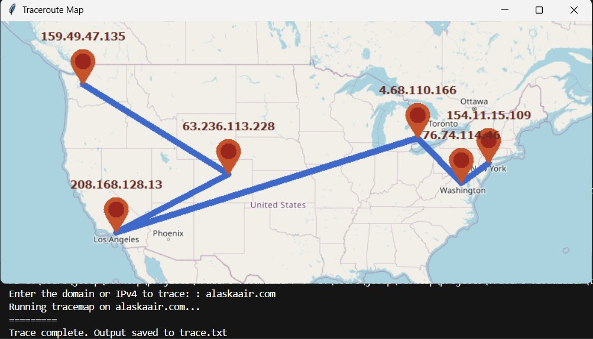

Recently I have been learning recursive functions in c++ and wanted to a project to practice. I created a simple Tic-Tac-Toe bot to play against that ustilises a recursive minimax function to find an optimal next move.
It is possible to beat the bot but that might change in the future. You can find the project here on github.
I have started a new project titled TraceMap (WIP). The goal is to create a simple and easy to use application to view tracert on a map. I have seen other implimentations but they werent exactly what I wanted so I am building my own.
The project utilizes IP-API to query the geographical information of IP addresses collected by tracert. As of now it works in its simplest form and produces the map and adress locations. This example is for alaskaair.com
